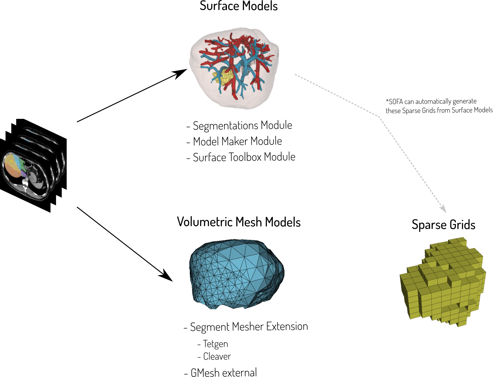
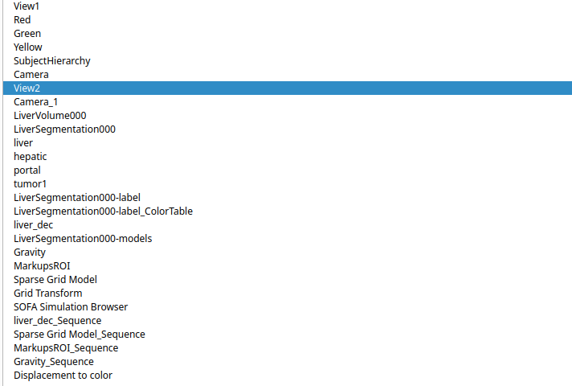

Created: 2025-06-18 Wed 16:58
Simulations as accurate predictors
Simulations as providers of non-linear behavior
(Stephane Cotin et al.)
Segmentations
3D Surface models
3D Tetrahedral meshes

Tips
SlicerSOFA is a 3D Slicer Extension
| SOFA Version | Windows | Linux | MacOS | |
|---|---|---|---|---|
| Slicer v5.8.1 (stable) | v24.06 | Dev+Pack | Dev+Pack | Dev only |
| Slicer v5.9 (preview) | v24.06 | Dev+Pack | Dev+Pack | Dev only |
numpy arrays as common language:

Simple node creation in 3D Slicer
# Scrip: 001_simple_node_creation.py (ctrl+g in slicer)
# Create a model node (Method I)
modelNode = slicer.mrmlScene.AddNewNodeByClass('vtkMRMLModelNode')
# Create a model node (Method II)
modelNode = slicer.vtkMRMLModelNode()
slicer.mrmlScene.AddNode(modelNode)
# Create display node (regardless of the method)
print(modelNode)
VTK Datasets
https://examples.vtk.org/site/VTKBook/05Chapter5/#characterizing-visualization-data
https://examples.vtk.org/site/VTKBook/05Chapter5/#54-cell-types
https://examples.vtk.org/site/VTKBook/05Chapter5/#dataset-representation
vtkPolyDatavtkPoints class.vtkPolyData maintains four separate cell lists:
vtkVertex, vtkPolyVertex.vtkLine, vtkPolyLine.vtkTriangle, vtkQuad, vtkPolygon.vtkTriangleStrip.https://examples.vtk.org/site/VTKBook/05Chapter5/#dataset-representation
vtkPolyData# Script: 002_vtkpolydata_1.py (ctrl+g in slicer)
# requires the SlicerSOFA extension
# Load the dataset
import SampleData
liverScene = SampleData.downloadSample('LiverSimulationScene')
# Get model from MRML Scene
modelNode = slicer.util.getNode('liver_dec')
# Get polydata from model
polyData = modelNode.GetPolyData()
# Iterate over points in the mesh (geometry)
for i in range(polyData.GetNumberOfPoints()):
print(polyData.GetPoint(i))
# Iterate over cells in the mesh (topology)
for i in range(polyData.GetNumberOfCells()):
print(polyData.GetCellType(i),
polyData.GetCell(i).GetPointId(0),
polyData.GetCell(i).GetPointId(1),
polyData.GetCell(i).GetPointId(2))
Output:
(129.05188821670617, 25.76884416954813, 39.73223040375034)
(118.80156312926272, 35.7303511720099, 36.28580029038706)
(132.42859446014708, 38.59746416817071, 41.155659542019805)
(129.12104482620379, 14.465276201463498, 48.71041794474367)
...
5 5 1 0
5 2 0 1
5 1 4 2
5 2 4 10
5 12 1 5
...
vtkUnstructuredGridhttps://examples.vtk.org/site/VTKBook/05Chapter5/#dataset-representation
vtkUnstructuredGrid# Script: 003_vtkunstructuredgrid_1.py (ctrl+g in slicer)
# requires the SlicerSOFA extension
# Load the dataset
import SampleData
liverScene = SampleData.downloadSample('RightLungLowTetra')
# Get model from MRML Scene
modelNode = slicer.util.getNode('RightLung')
# Get the unstructured grid from model
unstructuredGrid = modelNode.GetMesh()
# Iterate over points in the mesh (geometry)
for i in range(unstructuredGrid.GetNumberOfPoints()):
print(unstructuredGrid.GetPoint(i))
# Iterate over cells in the mesh (topology)
for i in range(unstructuredGrid.GetNumberOfCells()):
print(unstructuredGrid.GetCellType(i),
unstructuredGrid.GetCell(i).GetPointId(0),
unstructuredGrid.GetCell(i).GetPointId(1),
unstructuredGrid.GetCell(i).GetPointId(2),
unstructuredGrid.GetCell(i).GetPointId(3))
Output:
(129.05188821670617, 25.76884416954813, 39.73223040375034)
(118.80156312926272, 35.7303511720099, 36.28580029038706)
(132.42859446014708, 38.59746416817071, 41.155659542019805)
(129.12104482620379, 14.465276201463498, 48.71041794474367)
...
5 5 1 0
5 2 0 1
5 1 4 2
5 2 4 10
5 12 1 5
...
RequiredPlugin type nodes)# Script: 004_sofa_nodex.py (ctrl+g in slicer)
# requires the SlicerSOFA extension
import Sofa.Core
import numpy as np
#Create the root node
rootNode = Sofa.Core.Node('root')
plugins=["Sofa.Component.IO.Mesh",
"Sofa.Component.StateContainer",
"Sofa.Component.Mapping.NonLinear",
"Sofa.Component.Topology.Container.Constant",
"Sofa.Component.Topology.Mapping",
#Other plugins
]
for plugin_name in plugins:
rootNode.addObject('RequiredPlugin', name=plugin_name)
inputNode = rootNode.addChild('InputSurfaceNode')
container = inputNode.addObject('TriangleSetTopologyContainer',
name='Container',
position=np.zeros(10*3).reshape(-1,3),
triangles=np.zeros(100))
subnode).node['subnode_name']). separator (e.g., =node['subnodename.subsubnodename']# Script: 005_sofa_nodes.py (ctrl+g in slicer)
# requires the SlicerSOFA extension
import Sofa.Core
import numpy as np
#Create the root node
rootNode = Sofa.Core.Node('root')
# Required plugins can be added here
inputNode = rootNode.addChild('InputSurfaceNode')
container = inputNode.addObject('TriangleSetTopologyContainer',
name='Container', position=np.zeros(10*3).reshape(-1,3),
triangles=np.zeros(100))
# Access to container
print(container)
print(rootNode['InputSurfaceNode']['Container'])
print(rootNode['InputSurfaceNode.Container'])
print(rootNode['Container']) #This won't work!
print(inputNode['Container'])#This will work!
subnode.attribute.array()).node['subnode_name']['attribute].array()).. separator (e.g., node['subnode_name.subsubnode_name.attribute'].array()).# Script: 006_sofa_nodes.py (ctrl+g in slicer)
# requires the SlicerSOFA extension
import Sofa.Core
import numpy as np
#Create the root node
rootNode = Sofa.Core.Node('root')
# Required plugins can be added here
inputNode = rootNode.addChild('InputSurfaceNode')
container = inputNode.addObject('TriangleSetTopologyContainer',
name='Container', position=np.zeros(10*3).reshape(-1,3),
triangles=np.zeros(100))
# Access to container geometry
print(container.position.array())
print(rootNode['InputSurfaceNode']['Container']['position'].array())
print(rootNode['InputSurfaceNode.Container.position'].array())
subnode.attribute). For scalar values.writeable() arrays. For vector data.# Script: 007_sofa_nodes.py (ctrl+g in slicer)
# requires the SlicerSOFA extension
import Sofa.Core
import numpy as np
#Create the root node
rootNode = Sofa.Core.Node('root')
# Required plugins can be added here
inputNode = rootNode.addChild('InputSurfaceNode')
container = inputNode.addObject('TriangleSetTopologyContainer',
name='Container', position=np.zeros(10*3).reshape(-1,3),
triangles=np.zeros(100))
# Access to container geometry
rootNode.dt = 0.1
with container.position.writeable() as geometry:
geometry[:] = np.random.rand(10*3).reshape(-1,3) #Note: Copy!!
geometry[0][0] = 10
numpy arrays to Communicate Slicer and SOFAnumpy arrays to Communicate Slicer and SOFA (I)np.zeros, np.ones, np.arange, np.linspace.import numpy as np
# Create a 1D array
a = np.array([1, 2, 3, 4, 5])
# Create a 2D array
b = np.array([[1, 2, 3], [4, 5, 6]])
print("1D array:", a)
print("2D array:\n", b)
Output:
1D array: [1 2 3 4 5]
2D array:
[[1 2 3]
[4 5 6]]
https://numpy.org/doc/stable/reference/generated/numpy.array.html
numpy arrays to Communicate Slicer and SOFA (II)dtype) that defines the type of elements in the array.np.int32, np.float64, etc.import numpy as np
a = np.array([1, 2, 3], dtype=np.int32)
print("Array:", a)
print("dtype:", a.dtype)
print("Item size:", a.itemsize)
print("Total size (nbytes):", a.nbytes)
Output:
Array: [1 2 3]
dtype: int32
Item size: 4
Total size (nbytes): 12
numpy arrays to Communicate Slicer and SOFA (III)import numpy as np
a = np.array([[1, 2, 3],
[4, 5, 6],
[7, 8, 9]])
# Select first row
row = a[0, :]
print("First row:", row)
# Select first column
col = a[:, 0]
print("First column:", col)
# Select a subarray
subarray = a[0:2, 1:3]
print("Subarray:\n", subarray)
Output:
First row: [1 2 3]
First column: [1 4 7]
Subarray:
[[2 3]
[5 6]]
numpy arrays to Communicate Slicer and SOFA (IV)copy() method to create a copy when needed.import numpy as np
a = np.array([1, 2, 3, 4, 5])
# Slicing creates a view
b = a[1:4]
print("Original slice:", b)
b[0] = 99
print("Modified slice:", b)
print("Original array after modifying slice:", a)
# Using copy to create a separate array
c = a[1:4].copy()
c[0] = 100
print("Copy modified:", c)
print("Original array after modifying copy:", a)
Output:
Original slice: [2 3 4]
Modified slice: [99 3 4]
Original array after modifying slice: [ 1 99 3 4 5]
Copy modified: [100 3 4]
Original array after modifying copy: [ 1 99 3 4 5]
numpy arrays to Communicate Slicer and SOFA (V)a[:] = something replaces the contents in-place without changing the array object.import numpy as np
a = np.array([1, 2, 3, 4, 5])
# Assigning a new array to 'a' creates a new object
a = np.array([10, 20, 30, 40, 50])
print("After assignment, 'a' is:", a)
# Using a slice to modify 'a' in-place
a[:] = [100, 200, 300, 400, 500]
print("After in-place modification, 'a' is:", a)
# Verifying that the array object is the same
b = a
a[:] = [1, 2, 3, 4, 5]
print("After modifying 'a', 'b' is also changed:", b)
Output:
After assignment, 'a' is: [10 20 30 40 50]
After in-place modification, 'a' is: [100 200 300 400 500]
After modifying 'a', 'b' is also changed: [1 2 3 4 5]
Sofa.Simulation.animatecount = 0
while count < 350: #350 iterations
count += 1
Sofa.Simulation.animate(root, root.dt.value)
slicer.app.processEvents() #Let Slicer process its own events
https://github.com/pieper/SlicerSOFA/blob/main/Experiments/scene_with_attachments.py
Sofa.Simulation.animatefrom qt import QTimer
# Initialization code goes here
# ...
iteration = 0
iterations = 30
simulating = True
def updateSimulation(): # Callback function
global iteration, iterations, simulating
# Update from Slicer to SOFA goes here
# ...
Sofa.Simulation.animate(rootSofaNode, rootSofaNode.dt.value)
# Update from SOFA to Slicer goes here
# ...
# Iteration management
iteration += 1
simulating = iteration < iterations
if simulating:
QTimer.singleShot(10, updateSimulation)
# Script: 008_example_1.py
# - requires SlicerSOFA
# - requires adjusting path for mesh files
import numpy
import Sofa
import Sofa.Core
import Sofa.Simulation
from slicer.util import arrayFromModelPoints
from slicer.util import arrayFromModelPolyIds # For Polydata cells
from SlicerSofaUtils.Mappings import arrayFromModelGridCells # For tetrahedral unstructured grid cells
slicer.util from SlicerSofaUtils.Mappings############################################
###### Simulation Hyperparameters
############################################
# Input data parameters
liver_mesh_file = "/tmp/originalMesh.vtk"
sphere_surface_file = "/tmp/biggerCavity.obj"
originalMeshNode = None
sphereNode = None
liver_mass = 30.0
liver_youngs_modulus = 1.0 * 1000.0 * 0.001
liver_poisson_ratio = 0.45
# Simulatlon hyperparameters
root = None
dt = 0.01
collision_detection_method = "LocalMinDistance"
alarm_distance = 10.0
contact_distance = 0.8
# Simulation control parameters
iteration = 0
iterations = 30
simulating = True
############################################
###### Load Simulation Data
############################################
def loadSimulationData():
global originalMeshNode
originalMeshNode = slicer.util.loadModel(liver_mesh_file)
sphereNode = slicer.util.loadModel(sphere_surface_file)
sphereNode.GetDisplayNode().SetRepresentation(slicer.vtkMRMLDisplayNode.WireframeRepresentation)
############################################
###### Create Sofa Scene
############################################
def createSofaScene():
global root
# Create a root node
root = Sofa.Core.Node("root")
plugin_list = [
"MultiThreading",
"Sofa.Component.AnimationLoop",
"Sofa.Component.Collision.Detection.Algorithm",
"Sofa.Component.Collision.Detection.Intersection",
"Sofa.Component.Collision.Geometry",
"Sofa.Component.Collision.Response.Contact",
"Sofa.Component.Constraint.Lagrangian.Correction",
"Sofa.Component.Constraint.Lagrangian.Solver",
"Sofa.Component.IO.Mesh",
"Sofa.Component.LinearSolver.Direct",
"Sofa.Component.Mass",
"Sofa.Component.MechanicalLoad",
"Sofa.Component.ODESolver.Backward",
"Sofa.Component.SolidMechanics.FEM.Elastic",
"Sofa.Component.StateContainer",
"Sofa.Component.Topology.Container.Dynamic",
"Sofa.Component.Topology.Mapping",
"Sofa.Component.Visual",
"Sofa.Component.Constraint.Projective",
]
for plugin in plugin_list:
root.addObject("RequiredPlugin", name=plugin)
#def createSofaScene() continues
# The simulation scene
with root.gravity.writeable() as gravity:
gravity[:] = np.array([-9.81 * 10.0, 0.0, 0.0])
root.dt = dt
root.addObject("FreeMotionAnimationLoop")
root.addObject("VisualStyle",
displayFlags=["showForceFields", "showBehaviorModels", "showCollisionModels", "showWireframe"])
root.addObject("CollisionPipeline")
root.addObject("ParallelBruteForceBroadPhase")
root.addObject("ParallelBVHNarrowPhase")
root.addObject(collision_detection_method, alarmDistance=alarm_distance, contactDistance=contact_distance)
root.addObject("CollisionResponse", response="FrictionContactConstraint", responseParams=0.001)
root.addObject("GenericConstraintSolver")
scene_node = root.addChild("scene")
#def createSofaScene() continues
#### Liver ####
liver_node = scene_node.addChild("liver")
liver_node.addObject('TetrahedronSetTopologyContainer', name="Container",
position=arrayFromModelPoints(originalMeshNode),
tetrahedra=arrayFromModelGridCells(originalMeshNode))
liver_node.addObject("TetrahedronSetTopologyModifier")
liver_node.addObject("EulerImplicitSolver")
liver_node.addObject("SparseLDLSolver", template="CompressedRowSparseMatrixMat3x3d")
liver_node.addObject("MechanicalObject")
liver_node.addObject("TetrahedralCorotationalFEMForceField",
youngModulus=liver_youngs_modulus,
poissonRatio=liver_poisson_ratio)
liver_node.addObject("UniformMass", totalMass=liver_mass)
liver_node.addObject("LinearSolverConstraintCorrection")
liver_collision_node = liver_node.addChild("collision")
liver_collision_node.addObject("TriangleSetTopologyContainer")
liver_collision_node.addObject("TriangleSetTopologyModifier")
liver_collision_node.addObject("Tetra2TriangleTopologicalMapping")
liver_collision_node.addObject("PointCollisionModel")
liver_collision_node.addObject("LineCollisionModel")
liver_collision_node.addObject("TriangleCollisionModel")
#def createSofaScene() continues
#### Sphere ####
sphere_node = scene_node.addChild("sphere")
sphere_node.addObject("MeshOBJLoader", filename=sphere_surface_file, scale=1.0)
sphere_node.addObject("TriangleSetTopologyContainer", src=sphere_node.MeshOBJLoader.getLinkPath())
sphere_node.addObject("TriangleSetTopologyModifier")
sphere_node.addObject("MechanicalObject")
# NOTE: The important thing is to set bothSide=True for the collision models,
# so that both sides of the triangle are considered for collision.
sphere_node.addObject("TriangleCollisionModel", bothSide=True)
sphere_node.addObject("PointCollisionModel")
sphere_node.addObject("LineCollisionModel")
sphere_node.addObject("FixedProjectiveConstraint")
#def createSofaScene() continues
# Initialize the simulation
Sofa.Simulation.init(root)
with sphere_node.MechanicalObject.position.writeable() as sphereArray:
sphereArray *= [-1,-1,1] #Note the LPS-to-RAS transform here!!
############################################
###### Update Simulation
############################################
def updateSimulation():
global iteration, iterations, simulating, root, originalMeshNode
for step in range(10):
Sofa.Simulation.animate(root, root.dt.value)
# update model from mechanical state
meshPointsArray = root['scene.liver'].getMechanicalState().position.array()
modelPointsArray = slicer.util.arrayFromModelPoints(originalMeshNode)
modelPointsArray[:] = meshPointsArray #Note the slice operator (copy!)
slicer.util.arrayFromModelPointsModified(originalMeshNode)
# iteration management
iteration += 1
simulating = iteration < iterations
if iteration % 10 == 0:
print(f"Iteration {iteration}")
if simulating:
qt.QTimer.singleShot(10, updateSimulation)
else:
print("Simlation stopped")
############################################
###### Execution flowRequires a LPS-to-RAS conversion
############################################
loadSimulationData()
createSofaScene()
updateSimulation()